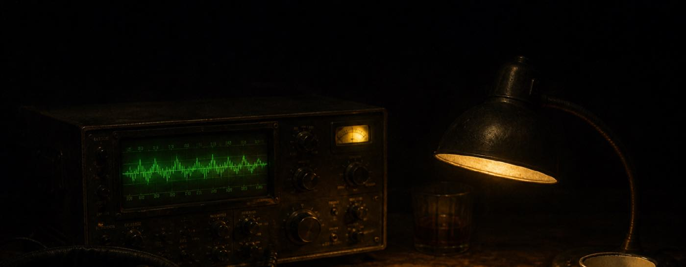

In development
DEAD AIR: ASHMERE
Listen closer. The truth is in the traffic.
Ashmere is a small harbour town that stopped appearing on the shipping forecast. You work the night desk at its last working transmitter, logging what comes in and passing it up the line. Most nights that is weather, ferries, and someone testing a microphone.
Some nights it is not.
LISTEN, DO NOT LOOK
The whole game is sound and a logbook. What you decide to write down is what happens next.
ONE SHIFT A SITTING
Every chapter is one night on the desk, forty minutes or so. Stop when the sun comes up.
NO WRONG ENDING
The log you file is the story you get. There is no failure screen, only a different morning.
TRY THE TUNER
Signal Lock is a small arcade piece built out of Dead Air's radio. It is playable on the home page right now.